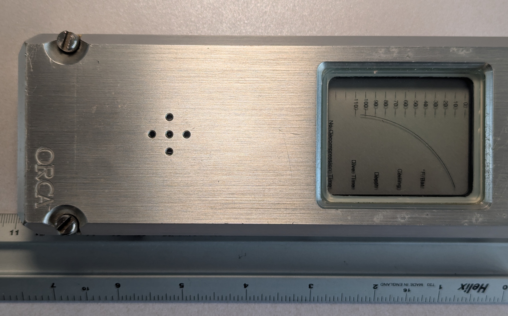

Orca Edge Dive Computer (1983)
A wrist-worn decompression computer that renders your body's nitrogen uptake as 12 abstract 'tissue' bar graphs

Overview
Introduced at the DEMA show in January 1983, the Orca Edge was a microprocessor dive computer worn on the wrist (or mounted to a console) that did something quietly radical: it replaced a numeric decompression plan with a picture of your own body's nitrogen state. Where a dive table or a dive watch hands you numbers, the Edge rendered the diver's decompression state as twelve horizontal "tissue" bar graphs on a graphic LCD — each bar representing a theoretical body compartment modeled on the US Navy air tables. When any tissue bar's pixels reach a limiting line, that tissue carries a decompression obligation, and the diver must keep above the computed "safe ascent depth" until the bar discharges enough to permit ascent. Reading the instrument means watching which bars bleed into the danger zone and reasoning about your own physiology from an abstract visualization. A single 9-volt lithium cell powered it, and it was produced slowly — roughly one unit per day — for a suggested retail of $675, with about 10,000 units sold over the mid-1980s.
Deep dive
Conventional tables and watches give numbers; the Edge gave a metaphor. The twelve tissue bars represent compartments that absorb and release nitrogen at different rates, and by watching which bars fill past their limiting line the diver infers how much decompression obligation is accumulating. This is an early, explicit example of wearable ambient computing — the machine does little spelling out; it hands you an abstract visualization of your body state and trusts you to act on it.
The Edge is the museum's only safety-critical wearable that asks the wearer to calibrate themselves against a live abstract display. Its form factor (a small wrist device resembling a modern watch) and its single 9V lithium cell make it a genuine precursor to the body-worn computers of the 2000s, decades before smartwatches.
Designed at Orca Industries by Craig Barshinger, Karl E. Huggins, and Paul Heinmiller, the Edge's development history is captured in Barsky's 2011 Journal of Diving History article. A surviving unit is catalogued at the Computer History Museum (accession 102716293), and the EdgeSimulator reproduces its display behavior.
Team & pioneers
- Craig Barshinger co-designer, Orca Industries
- Karl E. Huggins co-designer, Orca Industries
- Paul Heinmiller co-designer, Orca Industries
- Computer History Museum holds a surviving unit (102716293)